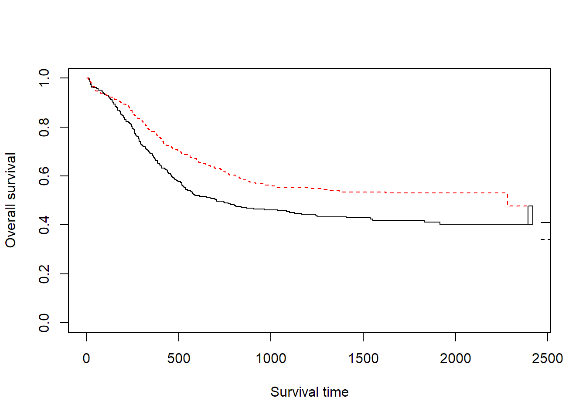
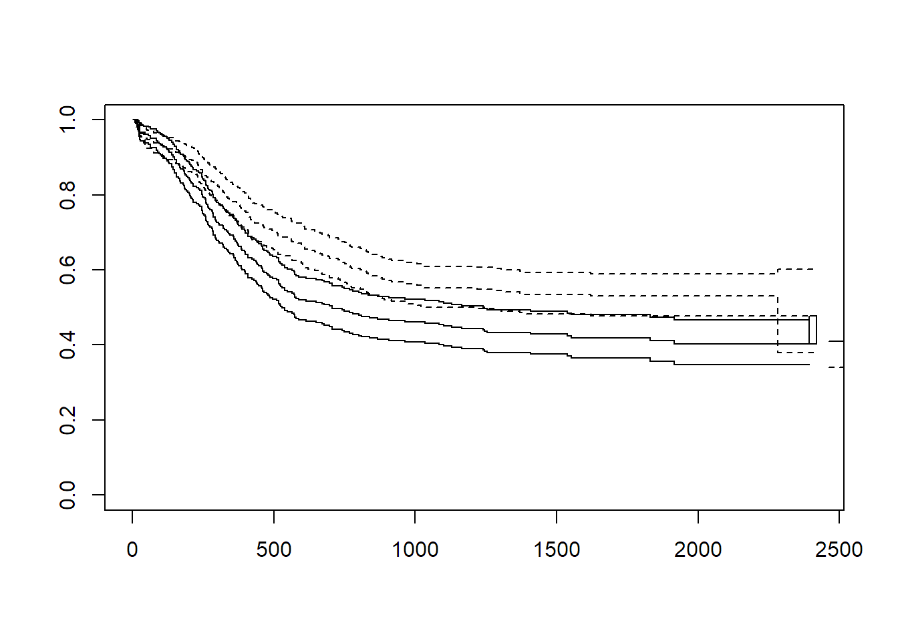

# パッケージの読み込み
library(survival)
library(magrittr)summary関数とstr関数を用いる。
必要に応じてグラフなどを書いてデータの分布を調べる。
summary(myeloid)## id trt sex futime death
## Min. : 1.0 Length:646 f:361 Min. : 4.0 Min. :0.0000
## 1st Qu.:162.2 Class :character m:285 1st Qu.: 286.5 1st Qu.:0.0000
## Median :323.5 Mode :character Median : 817.0 Median :0.0000
## Mean :323.5 Mean :1010.1 Mean :0.4954
## 3rd Qu.:484.8 3rd Qu.:1733.2 3rd Qu.:1.0000
## Max. :646.0 Max. :2419.0 Max. :1.0000
##
## txtime crtime rltime
## Min. : 24.0 Min. : 21.0 Min. : 26.0
## 1st Qu.: 105.0 1st Qu.: 32.0 1st Qu.: 181.5
## Median : 147.0 Median : 39.0 Median : 283.0
## Mean : 229.3 Mean : 50.1 Mean : 363.3
## 3rd Qu.: 244.2 3rd Qu.: 57.0 3rd Qu.: 470.0
## Max. :1526.0 Max. :554.0 Max. :1905.0
## NA's :282 NA's :192 NA's :420head(myeloid, n = 10)| id | trt | sex | futime | death | txtime | crtime | rltime |
|---|---|---|---|---|---|---|---|
| 1 | B | f | 235 | 1 | NA | 44 | 113 |
| 2 | A | m | 286 | 1 | 200 | NA | NA |
| 3 | A | f | 1983 | 0 | NA | 38 | NA |
| 4 | B | f | 2137 | 0 | 245 | 25 | NA |
| 5 | B | f | 326 | 1 | 112 | 56 | 200 |
| 6 | B | f | 2041 | 0 | 102 | NA | NA |
| 7 | A | m | 63 | 1 | NA | NA | NA |
| 8 | A | f | 446 | 1 | 205 | 34 | 382 |
| 9 | B | f | 1695 | 0 | NA | 28 | NA |
| 10 | A | f | 1669 | 0 | 106 | NA | NA |
str(myeloid)## 'data.frame': 646 obs. of 8 variables:
## $ id : int 1 2 3 4 5 6 7 8 9 10 ...
## $ trt : chr "B" "A" "A" "B" ...
## $ sex : Factor w/ 2 levels "f","m": 1 2 1 1 1 1 2 1 1 1 ...
## $ futime: num 235 286 1983 2137 326 ...
## $ death : num 1 1 0 0 1 0 1 1 0 0 ...
## $ txtime: num NA 200 NA 245 112 102 NA 205 NA 106 ...
## $ crtime: num 44 NA 38 25 56 NA NA 34 28 NA ...
## $ rltime: num 113 NA NA NA 200 NA NA 382 NA NA ...ここで使うデータは、パッケージに付属のデータ：白血病患者に対する治療のA/Bでの効果を調べるデータ
今回は治療A/Bと死亡までの差をみる
ge.surv <- Surv(myeloid$futime, myeloid$death)
head(ge.surv, n = 10)## [1] 235 286 1983+ 2137+ 326 2041+ 63 446 1695+ 1669++はイベント打ち切り、無印はイベントがなかったことを示す
plot(ge.model,lty=1:2,xlab = "Survival time", ylab = "Overall survival", col = 1:2)%>% legend(locator(1),c("A","B"), lty=c(1,2))
## 実際に描くときはlegendを併記するとグラフに追記できるplot(ge.model,conf.int = .95,lty=1:2) %>%
legend(locator(1),c("A","B"), lty=c(1,2))
ただし、信頼区間をつけるとグラフが読みにくくなる
AとBによる生存曲線を比較する。
survdiff(Surv(myeloid$futime, myeloid$death) ~ myeloid$trt)## Call:
## survdiff(formula = Surv(myeloid$futime, myeloid$death) ~ myeloid$trt)
##
## N Observed Expected (O-E)^2/E (O-E)^2/V
## myeloid$trt=A 317 171 143 5.28 9.59
## myeloid$trt=B 329 149 177 4.29 9.59
##
## Chisq= 9.6 on 1 degrees of freedom, p= 0.002帰無仮説は生存曲線に差がないというものである。今回の結果はp値=0.002であり生存曲線に差があるという結果になる
先に描いた生存曲線から比例ハザード性は保たれていると考えられる。
model.cox <- coxph(Surv(futime, death) ~ trt + sex, data = myeloid)
summary(model.cox)## Call:
## coxph(formula = Surv(futime, death) ~ trt + sex, data = myeloid)
##
## n= 646, number of events= 320
##
## coef exp(coef) se(coef) z Pr(>|z|)
## trtB -0.3582 0.6989 0.1129 -3.174 0.00151 **
## sexm 0.1150 1.1219 0.1128 1.020 0.30782
## ---
## Signif. codes: 0 '***' 0.001 '**' 0.01 '*' 0.05 '.' 0.1 ' ' 1
##
## exp(coef) exp(-coef) lower .95 upper .95
## trtB 0.6989 1.4307 0.5602 0.872
## sexm 1.1219 0.8913 0.8994 1.399
##
## Concordance= 0.549 (se = 0.016 )
## Likelihood ratio test= 10.56 on 2 df, p=0.005
## Wald test = 10.53 on 2 df, p=0.005
## Score (logrank) test = 10.62 on 2 df, p=0.005係数をHRと95%信頼区間に変える
## 95%CI
round(exp(confint(model.cox)),3)## 2.5 % 97.5 %
## trtB 0.560 0.872
## sexm 0.899 1.399## HR
round(exp(coefficients(model.cox)),3)## trtB sexm
## 0.699 1.122HR 0.699 (95%CI 0.560 - 0.872)という結果で、治療B群の方が死亡率を有意に低下させる。